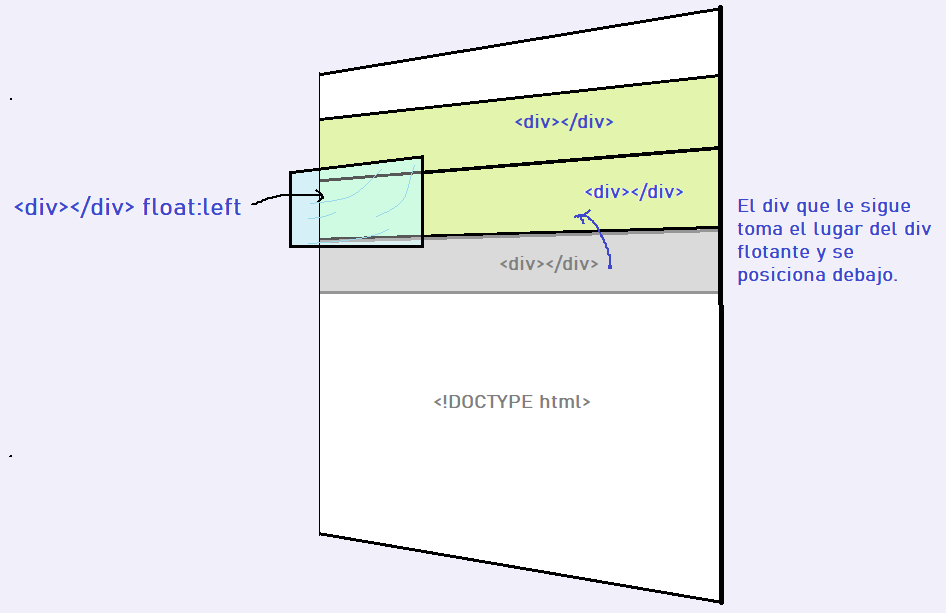

La propiedad clear especifica qué elementos pueden flotar junto al elemento despejado y en qué lado. La propiedad clear puede tener uno de los siguientes valores:
La forma más común de usar la propiedad clear es después de haber usado una propiedad float en un elemento. En lo que he podido observar la propiedad clear sirve para que un elemento no tenga elementos con propiedad float montados sobre él.
Sin clear el div1 flota, el div2 toma el nuevo lugar quedando debajo de div1.
En la siguiente imagen se aprecia como funciona el float:left. Vemos que se monta sobre el elemento que le sigue. Esto sucede porque al parecer literalmente es como si el elemento se elevara sobre su mismo lugar y el espacio que ocupa queda disponible para el siguiente elemento.
El siguiente ejemplo borra el flotador de la izquierda. Significa que no se permiten elementos flotantes en el lado izquierdo por lo que el div hace un salto de linea (ver div4).
Ejemplo:
Sin clear
Con clear